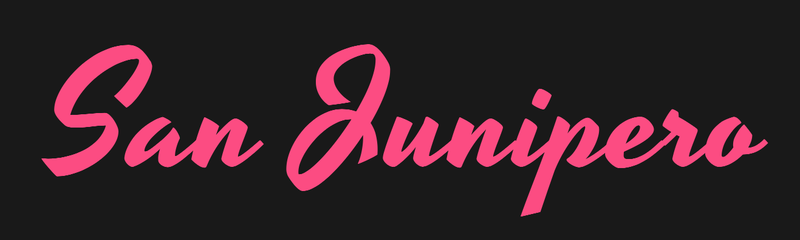
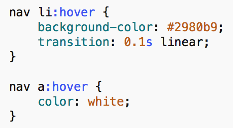

CSS 1
Selectors and Syntax for Styling Web Pages
Introduction
What is CSS?
Cascading Style Sheets (CSS) is a language primarily used on the web to add style to an HTML document. We can write CSS to change the color, font, positioning, and size of different elements within our document.
In other words, HTML allows us to structure the content of a webpage, while CSS allows us to change the look and appearance of the content. For example, suppose I have the following written in my HTML document:
<h2>San Junipero</h2>
This will add "San Junipero" to our webpage, and mark it as a second level heading. When rendered in the web browser, by default it will look like the following:
However, with a bit of CSS applied, our heading could look like the following:

CSS is a vast and comprehensive language. This manual is meant to be an introduction to the language, and give you the essential knowledge necessary to begin styling your own webpages. If you are looking to further your skills beyond this manual, feel free to check out our CSS 2 manual.
Prerequisites and Requirements
This course will build upon the content taught in our HTML course. If you are not already familiar with HTML and the essentials of how the web works, we recommend reading through our HTML manual before proceeding.
Basic CSS Structure
Selectors, Properties, and Values
Before we learn to add CSS to a webpage, we will learn its basic structure.
CSS is written as a series of rules. Each rule provides information as to how the content should be styled. Rules are typically grouped together, and follow the structure below:
selector {
property: value;
property: value;
property: value;
}
-
The selector is the object or container on the page you would like to change. For example, if we wanted to select all <p> elements on the page, we could use the selector p. If we wanted to select all <h2> elements, we could use the selector h2.
-
The property is the feature we would like to change about the object. This can be the size, color, shape, or positioning of the object. We will walk through a series of different properties later in this manual.
-
The value is the value assigned to the property. For example, if we are changing the color of an object to orange, the property would be color, and the value of that property would be orange.
Note that the punctuation is important. The curly braces indicate a list of property:value pairs. The colon separates a property from its values. The semicolon indicates the end of a property:value pair so that another may be added to the list. Like HTML, extra whitespace is ignored in CSS. This allows us to use whitespace to make our CSS code more readable.
Example
Here is a small snippet of CSS code. We will walk through this code line-by-line to gain a better understanding of how CSS works.
h1 {
color: blue;
font-size: 16px;
}
p {
margin-top: 16px;
font-style: oblique;
}
body {
width: 600px;
}
In this example, we have three CSS statements. The first statement uses h1 as its selector, meaning it will affect all heading elements, or <h1> tags on the webpage.
Inside this statement there are two rules. The first one will change the text color to blue, and the second one will change the font size of the headings to 16px.
By default, our heading would look similar to the image on the left. However, with our CSS rules applied, our heading will change color and size to appear like the image on the right:
In the second statement, we see that all <p>, or paragraph elements are given extra spacing (a margin) on top. All text within <p> elements is also italicized (oblique).
Finally, the third statement will set the width of the entire webpage to 600px, by setting the width of the <body> element. As we learned in HTML, the <body> element contains the entire webpage.
Setting up a Workspace
To edit our HTML/CSS, we will set up the same workspace we used in our HTML course manual.
-
Navigate to the class files folder, and open the unfinished-website folder.
This folder contains the unfinished website we will be working on throughout the rest of this manual. The finished-website-example folder contains a completed version of the website as a reference.
-
Right click on the index.html file, then choose Open With to open it with your favorite text editor.
We will be using TextWrangler, a text editor for Mac and Windows machines. If you'd like to download TextWrangler you may find it for free online.
-
Right click on the file again and choose to open it with a web browser. We will be using Google Chrome.
-
Feel free to place the two windows side-by-side, similar to what is pictured below.
With this setup, we are able to edit our HTML/CSS directly in our text editor on the left, while previewing it in a web browser on the right.
Implementing CSS
There are three ways in which we can add CSS to our webpage:
Inline Styling:
<h1 style="color:white;">Text</h1>
Internal stylesheet:
<style>
h1 {
color: white;
}
</style>
External stylesheet:
<link rel="stylesheet" href="stylesheet.css">
Let's look at each of these in further detail now.
Inline Styling
CSS rules can be directly added to individual HTML elements using internal styling. By adding a style attribute to an element, we can write CSS specifically for that element.
The example below will change the color of the text to green, and give it center alignment:
<p style = "color: green; text-align: center">This is my paragraph text.</p>
These styling rules will only affect this specific element on the webpage, and no other elements around it. This is useful for individual elements that need customized styling.
Now, we will add inline styling to our own webpage.
-
At the bottom of our index.html document, find the <footer> element.
<footer>
<p>©2017 Fuzzy and the Blue Tones. All Rights Reserved</p>
</footer>
-
Add the following inline CSS:
<footer style="text-align: center; color: lightgray;">
<p>© 2017 Fuzzy and the Blue Tones. All Rights Reserved</p>
</footer>
-
Save the file, then refresh the web browser to view the changes. The footer of your website should now look like the following:
Note that if you apply inline styling to an element in HTML, that styling will also be applied to any element inside of it. In our example, we only had one <p> (paragraph) element inside of our footer.
-
Open albums.html and tour.html from our unfinished-website folder, and update the <footer> on each page to match.
Internal Style Sheets
An internal style sheet is CSS code that is added directly into the <head> of your HTML document. There is a special <style> tag that opens and closes an internal style sheet. Below is an example of an internal style sheet.
<style>
a {
font-family: 'Arial', sans-serif;
}
</style>
The code above will change the font of all links in the page to "Arial". Remember that internal style sheets must be within the <head> of the document.
External Style Sheets
An external style sheet is a completely separate document with styling rules, that is then linked to multiple HTML files.
The best way to take advantage of the re-usability of CSS styles is to use external style sheets. By moving style rules outside of the HTML document, the style rules can be used multiple times across multiple web pages. Changing the entire look of a website is simply a matter of changing the rules of one external style sheet, rather than several internal style sheets.
Linking a document to an external style sheet is done by adding a <link> tag to the <head> of the document. Below is an example of what the link tag looks like.
<link rel = "stylesheet" href = "stylesheet.css"/>
We will now create an external style sheet to use for our own website.
-
In TextWrangler, go to the menu bar and choose File > New > Text Document.
-
Once you have created a new document, save it as stylesheet.css to the resources folder for our website. Your website's root folder should now look similar to the following:
-
In the <head> of each webpage, add the following snippet of code to link the external style sheet.
<!-- link to external stylesheet -->
<link rel="stylesheet" href="resources/stylesheet.css">
The <head> tag should look like the following:
Now that we've linked our external style sheet to each webpage, whatever CSS rules we write here will affect the entire website. Go ahead and try it out with some of the CSS rules we've learned so far!
Style Sheet Cascade
There is no limit to the number CSS style rules you can create to format your page. Furthermore, an HTML document can contain a combination of inline styles, internal style sheets, and external style sheets. A problem arises however when you have multiple style rules that have the same selector.
When multiple rules conflict with one another, which rule is used?
The priority of style rules is usually referred to as the cascade. The first thing to note is that style sheets are read top to bottom. Rules with the same selector that appear later in a style sheet override rules of that selector that appear earlier. But what if rules with the same selectors are in different style sheets? If you have a rule that selects paragraph elements in an external style sheet and another rule that selects paragraph elements in an internal style sheet, there is an order of priority that browsers typically follow in selecting which rule to use. The priorities in order from lowest to highest are as follows:
-
Inline styles
-
Internal style sheets
-
External style sheets
-
Browser defaults
Therefore the internal rule takes precedence in the paragraph case above. This is a simplified version of what actually goes on when interpreting which rules are chosen, but will suffice for our purposes.
Properties and Values
In previous exercises, we have pre-written CSS code for you to copy. In this section, we will outline the most common properties in CSS, and how to edit them for yourself. Before we do this, we need to talk about measurements and color.
Units of Measure
Often, while writing CSS, you will need to define the width, height, size, or spacing of an element. When writing measurements, we have many different units of measure to choose from. Below is a table of the most commonly used units of measure.
| Unit |
Description |
| % |
A percentage value that is relative to another value, typically to an enclosing element. |
| em |
A measurement that is relative to the size of a given font. For example, if your font size is set to 16px, then one "em" is 16px. |
| in |
A measurement in inches. |
| pt |
A measurement in points. One point is defined as 1/72nd of an inch. |
| px |
A measurement in pixels. Due to varying pixel densities on computer displays, one pixel in CSS may not translate to one pixel on the user's display. |
Feel free to experiment with different units of measure when styling your own website. For the rest of this manual, we will use pixels as our primary unit of measure, as they are the easiest to understand.
Colors
There are three main ways we can represent colors in CSS. First, we can represent colors as words, like in the example below. You can find a full list of all CSS color keywords online, such as this one from the W3 Schools web site.
p {
color: orange;
}
The second way of writing colors is by using a hexadecimal representation. Essentially, every color on the spectrum has a six character representation, called a hex code.
The best way to find a color's hex code is by using a color picker. You can easily find a color picker by going to Google and searching for "color picker".
The green color above is represented as #A8D86E, so in our CSS we would write:
p {
color: #A8D86E;
}
The third way to represent color is using syntax called HSL, which stands for hue, saturation, and lightness.
Hue is the overall "color" of the color and the value indicates the color's location around the color wheel in degrees, using values from 0 to 360. Reds start 0, and move through the color wheel. In the example above, which is a light green, the hue value is 87.
Saturation is how much of the hue is present in the color. It is a percentage value, from 0% to 100% (note that it requires the % sign to work correctly). 0% saturation means none of the hue is present, and 100% means the hue is as strong as possible.
Lightness is how light the color appears, using values from 0% to 100%. 0% will appear fully black, and 100% will appear fully white.
Writing the value above in HSL notation would look like the following:
p {
color: hsl(87, 58%, 64%);
}
Essential Properties
Now that we're familiar with how to write measurements and color, we're going to implement some commonly used CSS properties into our website.
| Property |
Description |
| width |
Defines an exact width for an element. |
| height |
Defines an exact height for an element. |
| max-width |
The maximum width an element can have, for example to prevent a text element from expanding to the full page width (and making it hard to read) when the browser window is open full-screen on a wide monitor. |
| max-height |
The maximum height an element can have. |
| font-size |
Defines the size of a font used inside a specific element. |
| line-height |
Sets the vertical spacing between lines of text in an element. |
| text-align |
Allows you to align text to the left, right, center, or justified. |
| color |
Changes the color of text inside the element. |
| background-color |
Changes the background color of an element. |
-
Add a max-width property to the <body> to set a maximum width for the webpage. Set the background color by using the background-color color property.
-
Add the color property for headings (<h1>) and links (<a>). Set the font-size for the main heading to 36px, and center the text using text-align.
Change the line-height for paragraph text to be 150%. Remove the underline from links (<a>) by setting the text-decoration property.

-
Finally, set the background-color for our navigation bar (<nav>), and center the text within it.
-
When you're finished, save the style sheet, and refresh the web browser to view your changes.
Selectors
In this next section, we will discuss how to create more specific selectors in CSS.
Selecting Multiple Elements
To select multiple elements at the same time in CSS, we can list the selectors separated by a comma.
a, p {
color: orange;
}
In the example above, we are selecting <a> and <p> elements, then changing their color to orange.
Nested Selections
We can also select elements within other elements, in order to make more specific selections. To select elements within other elements, we list their selectors, separated by a space.
In the example below, we select only paragraph elements that are inside the footer of the page.
footer p {
color: orange;
}
In the next example, we select only links that are nested inside of paragraphs.
p a {
color: orange;
}
Now let's practice with our own webpage.
-
In the <header> of our webpage, we have a banner image that stretches larger than the width of the page. We would like to change the size of this image without affecting other images on our website.
Add the following code to your style sheet:
-
Change the color of links within the navigation bar with the following code:
Pseudo Classes
Pseudo-classes provide a way to add special effects to certain elements. The most commonly encountered pseudo-classes are found on anchor tags (links).
For example, if I would like to change the appearance of a link while my mouse is hovered over it, I can use the selector a:hover. If I would like to change the appearance of a link after the link has been clicked on, I can use the selector a:visited.
Pseudo classes are most commonly used with links, buttons, and forms on a webpage. Used appropriately, they can enhance the user experience. Anchor tags (links) have four common pseudo-classes: link, active, visited, and hover.
-
The link pseudo-class refers to the unvisited link.
-
The active pseudo-class refers to highlighted elements, which happens if a user is tabbing through links on a page.
-
The visited pseudo-class refers to links that have been clicked on and visited.
-
The hover pseudo-class refers to links when the cursor is hovering over them.
We will now practice on our own webpage.
-
First, we will change the color of links on our webpage when the cursor his hovered over them.
The transition property applies a fade transition to the link when the mouse hovers over it. This property is optional, but adds a nice touch.
-
Next, we can enhance our navigation bar in a similar way.

Your webpage should now look similar to the following:
Classes and IDs
CSS works by naming elements on a page and adding rules which change their appearance. One way to make more specific selections is by giving specific names, or labels to elements within your page. We call these classes and IDs.
Classes are used for CSS rules that apply to more than one element, whereas IDs can be applied to individual elements. Below is an example of a class and ID applied to two different HTML elements. The name you choose for a class or ID is arbitrary.
<!-- HTML class example -->
<div class = "animals"> ... </div>
<!-- HTML ID example -->
<div id = "butterfly"> ... </div>
Finally, to select a specific class or ID in CSS, use the following format:
.animals {
/* CSS goes here */
}
#butterfly {
/* CSS goes here */
}
A class or ID can be added to any element in your HTML document, such as <nav>, <header>, or <img>. Most notably they are added to <div> tags, which are essentially containers that you may use anywhere on your page. They help you structure a webpage and style groups of elements.
-
Open albums.html in TextWrangler. Notice that the images on this page have the class album-art applied to them.
-
To style only images that are labelled as album art, write the following CSS rules:
The border-radius property adds a curved edge around the corners of the image.
Inheritance and Heirarchy
Similar to the way rules across style sheets have certain priorities, individual rules have special priorities as well. A good rule of thumb to follow is that the more specific a selector, the higher its priority. This is why the ID tags are likely to override other CSS rules. Since IDs only refer to a single element in an HTML document, they have a very high specificity and consequently a very high priority. Likewise, classes are more specific than a tag, rules applied to a tag with a class will override rules applied to a simple tag.
Another important concept to understand is inheritance. If an element isn’t specifically selected, by default it will receive the same formatting as its parent element. For example, if the <body> of a web page has a green background, <p> elements inside the body will also have a green background, unless a more specific rule is created. We say a style rule “cascades” down to its descendant elements.
Positioning
The Normal Flow
Before jumping into positioning elements with CSS, it is important to understand how elements are positioned on the page in absence of any user-defined CSS rules.
By default, block elements stack top to bottom, while inline elements are laid out horizontally, space permitting. Some block elements you might know are divisions, headings, paragraphs, and lists. Inline elements are objects such as links, spans, images, and form inputs. So far, the entire website designed in HTML and CSS has used this method of layout.
You can change whether an element is a block or inline element using the following CSS rule.
element {
display: block;
}
element {
display: inline;
}
On our own website, notice how the links in the navigation bar stack on top of one another. By default, list items (<li>) are block elements.
-
Change the flow of <li> elements within our navigation bar using the following code:
-
Refresh the webpage to view the changes. The navigation bar should now look similar to the following:
The Box Model
As you may have discovered by now, every element in HTML is placed within a container, or a "box". For example, the <body> is a "box" containing the entire webpage. Each of our navigation links are "boxes" that are inside the <nav> "box".
Because each element is contained in this way, there are three important properties we can change for every element on the page, to change the page layout. These properties are margin, padding, and border.
-
Margin refers to the space between the edge of the "box", and other elements on the page.
-
Padding to the space between the content and the edge of the "box".
-
Border refers to a border, or line wrapping around the outside of the container.
Whether you're aware of it or not, each element on your page already has a margin, padding, and a border around its invisible "box". For more clarity, see the diagram below.
To learn more about padding, we will look to an example.
-
In the box-model folder in the class files, open up style.css in a text editor, and open index.html in a web browser.
-
In the CSS file, you'll notice individual settings for margin and padding for each side of our object. There's also a border property.
Feel free to experiment with these properties, by placing in different values and seeing the result.
The gray box represents the entire area of the container. The orange represents the box border, and whitespace represents the margin.
Adding Margin and Padding
Now that we are familiar with the box model, we can add margin and padding to our own website to space elements how we like. Take a few minutes to add the margin and padding properties to different elements on your page.
The additions we made to our example site are listed below.
Notice how the left and right margin for the body is set to auto. Setting the left and right margin to auto is a common method of centering elements in CSS. By centering the body element, we are displaying our website in the center of the browser window.
Floats
Notice that by default, block elements stack vertically on the page. On simple pages, this is usually the desired behavior, but there are cases in which you might want two elements to sit side-by-side. For example, take a look at the following image.
Here we have two block elements stacked on top of one another, the pink square and some paragraph text. By applying the following CSS property, we can "float" the square to the left or right of it's parent container, allowing other content to fill the space.
element {
float: left;
}
After our float is applied, we have the following:
Notice how the paragraph text automatically fills the empty space to the right of the pink square. If we don't want the text to fill in the space left by a float, we can use the clear property.
element {
clear: both;
}
Now, let's use the float and clear properties to enhance our own website.
-
On the albums page of our website, notice how the song lists flow underneath the album art. We can "float" the album artwork so the lists show up side-by-side with the album art.
-
We will add the clear property to make sure certain block elements don't fill in the space left by a float.
Custom Fonts
Up until this point, we haven't changed any of the fonts on our website. As a finishing touch, we will use this section to customize our website's fonts.
Changing the font within an element in CSS is simple. You will use the font-family property. There are also a number of other font properties you can change, demonstrated below.
element {
font-family: 'Arial' sans-serif;
font-size: 16px;
font-weight: 600;
font-style: italic;
}
To use a custom font, we would normally need to host it on our website, then link it in the HTML. For the sake of simplicity, we will be using an online font service called Google Fonts. Google Fonts allows users to add custom fonts to their site in a very easy way.
-
Visit Google Fonts, (fonts.google.com). When there, feel free to browse and select the fonts you will add to your website.
For our example, we chose the font "Oswald" for our headings/navigation, and "Lora" for our body text.
-
Select the red plus button in the upper right corner of a font to select it. A window will pop up at the bottom of the screen containing snippets of HTML and CSS.
-
The first HTML <link> snippet will link your webpage to the font. Place the <link> in the <head> of each web page. Finally, the CSS snippet shows how to apply the font to a specific element in CSS.
-
Use the font-family property to assign the font to different elements in your style sheet. Below is what we added.
If you don't wish to use Google Fonts, you may also choose a generic font that is already installed on most computers. You may find a full list of web-safe fonts online.
Congratulations! Your website is now finished. You may notice that we have yet to style the table found on the "tours" page of our website. As a bonus activity, feel free to look through the CSS of the finished website to learn how to style tables.
If all went well, our website should now look similar to the following:
Further Resources
If you're looking to further your knowledge of CSS, Software Training for Students offers a CSS 2 class which dives into advanced CSS positioning.
You may also learn CSS through online tutorials, provided by Lynda.com. STS provides free access to Lynda for all UW students and faculty members.
To access Lynda.com, or view our class schedule, feel free to visit wisc.edu/sts.